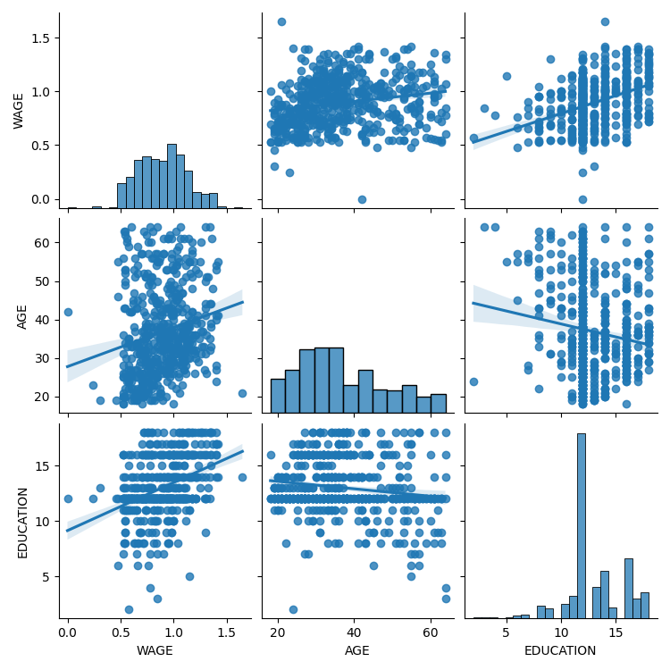
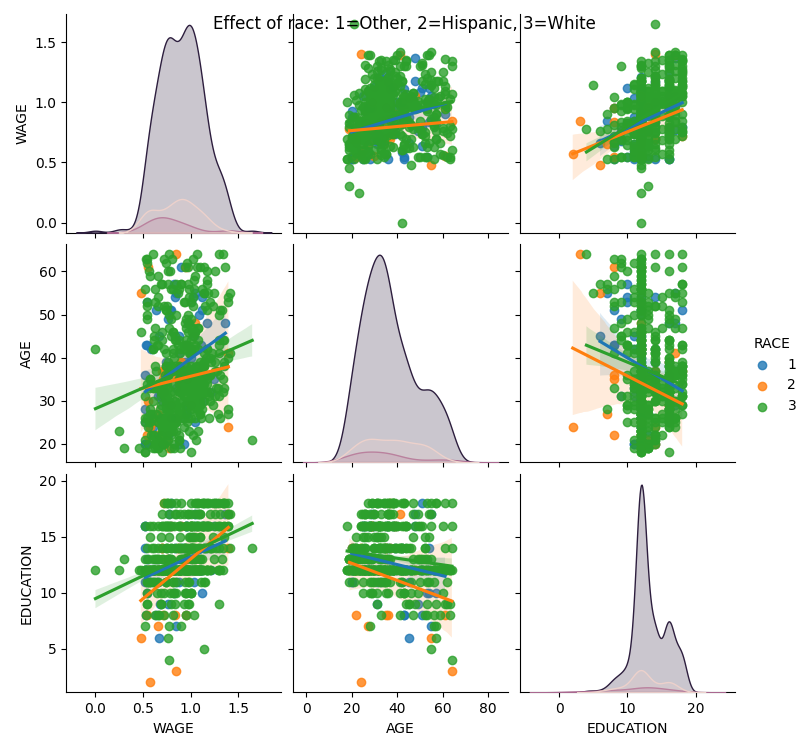

Note
Go to the end to download the full example code
3.1.6.7. Visualizing factors influencing wages¶
This example uses seaborn to quickly plot various factors relating wages, experience and eduction.
Seaborn (https://seaborn.pydata.org) is a library that combines visualization and statistical fits to show trends in data.
Note that importing seaborn changes the matplotlib style to have an “excel-like” feeling. This changes affect other matplotlib figures. To restore defaults once this example is run, we would need to call plt.rcdefaults().
# Standard library imports
import os
import matplotlib.pyplot as plt
Load the data
import pandas
import requests
if not os.path.exists("wages.txt"):
# Download the file if it is not present
r = requests.get("http://lib.stat.cmu.edu/datasets/CPS_85_Wages")
with open("wages.txt", "wb") as f:
f.write(r.content)
# Give names to the columns
names = [
"EDUCATION: Number of years of education",
"SOUTH: 1=Person lives in South, 0=Person lives elsewhere",
"SEX: 1=Female, 0=Male",
"EXPERIENCE: Number of years of work experience",
"UNION: 1=Union member, 0=Not union member",
"WAGE: Wage (dollars per hour)",
"AGE: years",
"RACE: 1=Other, 2=Hispanic, 3=White",
"OCCUPATION: 1=Management, 2=Sales, 3=Clerical, 4=Service, 5=Professional, 6=Other",
"SECTOR: 0=Other, 1=Manufacturing, 2=Construction",
"MARR: 0=Unmarried, 1=Married",
]
short_names = [n.split(":")[0] for n in names]
data = pandas.read_csv(
"wages.txt", skiprows=27, skipfooter=6, sep=None, header=None, engine="python"
)
data.columns = short_names
# Log-transform the wages, because they typically are increased with
# multiplicative factors
import numpy as np
data["WAGE"] = np.log10(data["WAGE"])
Plot scatter matrices highlighting different aspects
import seaborn
seaborn.pairplot(data, vars=["WAGE", "AGE", "EDUCATION"], kind="reg")
seaborn.pairplot(data, vars=["WAGE", "AGE", "EDUCATION"], kind="reg", hue="SEX")
plt.suptitle("Effect of gender: 1=Female, 0=Male")
seaborn.pairplot(data, vars=["WAGE", "AGE", "EDUCATION"], kind="reg", hue="RACE")
plt.suptitle("Effect of race: 1=Other, 2=Hispanic, 3=White")
seaborn.pairplot(data, vars=["WAGE", "AGE", "EDUCATION"], kind="reg", hue="UNION")
plt.suptitle("Effect of union: 1=Union member, 0=Not union member")
- 

- 
Text(0.5, 0.98, 'Effect of union: 1=Union member, 0=Not union member')
Plot a simple regression
seaborn.lmplot(y="WAGE", x="EDUCATION", data=data)
plt.show()

Total running time of the script: (0 minutes 8.789 seconds)